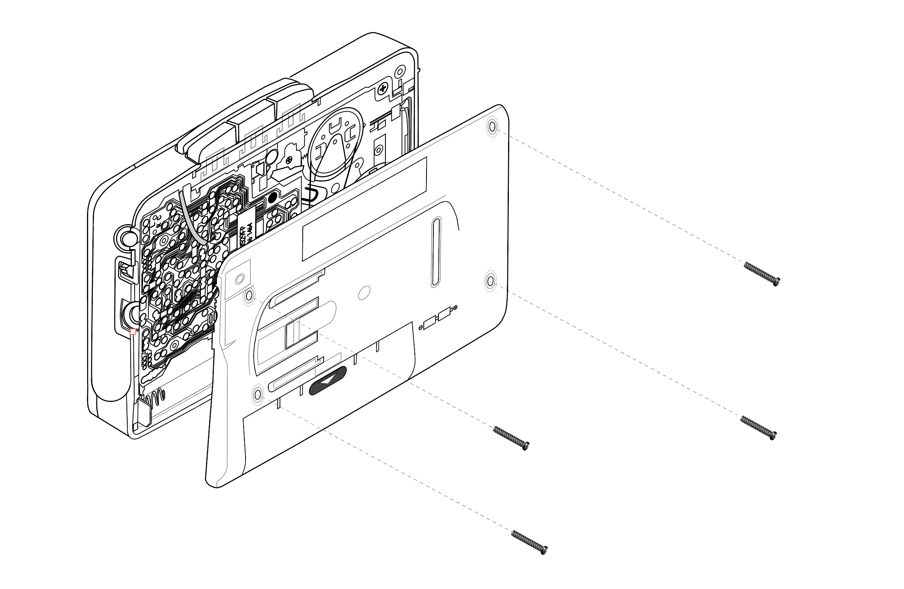
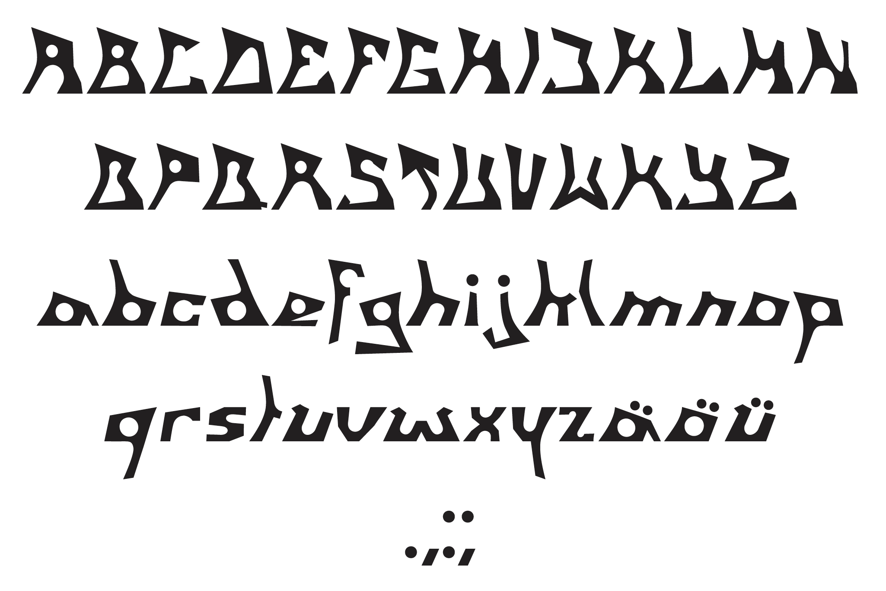
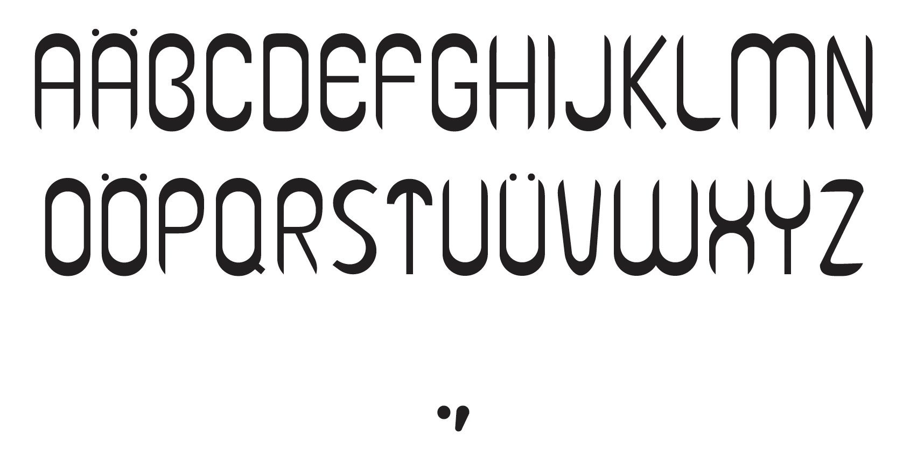

Digital Precision
Which elements of a 3D object are crucial for it to work convincingly in digital form?The cassette recorder is dismantled, closely observed and measured until every detail becomes visible. Screws, buttons, lines and proportions form a technical portrait. Photographed and digitally retraced with vectors, a visual reconstruction emerges that unites precision and nostalgia. Side views, inner workings and exploded drawings show the object in its entirety. The meticulous work is an exercise in accuracy, patience and keen observation.

Typography from Technology
The design of an album cover for the band Deichkind first emerged from sketches of the cassette recorder, but that was only the beginning. From the digital reproductions, individual elements were extracted, examined and measured. Ovals, buttons and structures of the hard drive served as building blocks for a new typeface. From these details, a font weight was created; further letters were developed according to the discovered formal rules. The work unites precise analysis with creative development of what had already been explored.


Album cover
Project
2024, 5 weeks, Illustration, Font-Design
<
>